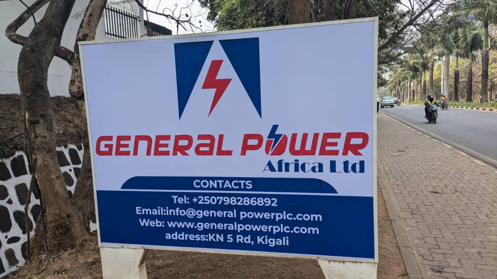
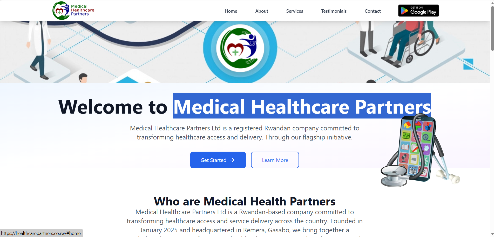
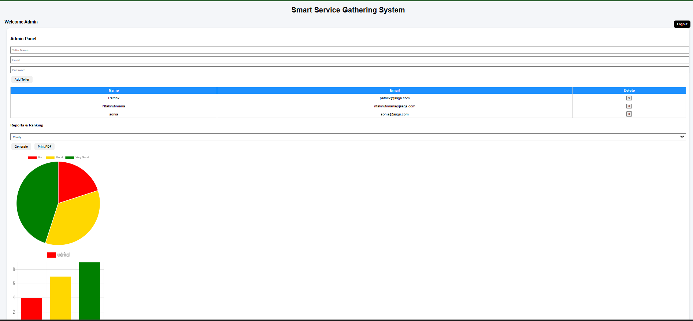
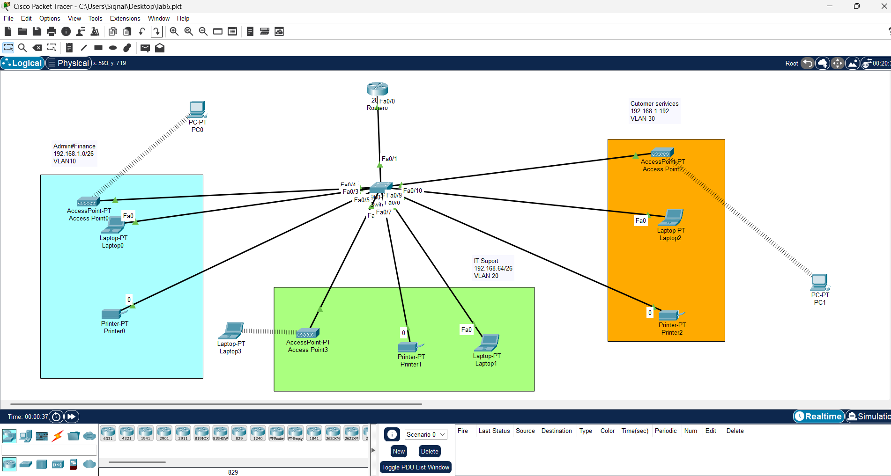

Graphic Design Portfolio (Samples)
Sample works representing posters, banners, branding, and TV graphics. Original works available upon request.



IT • Electronics • Telecommunications Technician | ICT Instructor | Graphic Designer | TV Production Technician
Kigali, Rwanda | Tel: 0784685792 | Email: signalpatrick1@gmail.com
I am a multi-skilled IT professional with an Advanced Diploma in Electronics and Telecommunications and currently pursuing a Bachelor of Computer Science. I have experience in IT systems, networking, electronics, TV production, teaching ICT courses, and creative media production. I am passionate about technology, innovation, and practical problem-solving.
Teaching Software Development, Computer Architecture, Networking, Computer Maintenance, Electricity, Graphic Design, System Automation, Refurbishment, Windows Server, and Cloud Computing.
Supported live TV production, operated audio-visual equipment, assisted with camera setup, lighting, and ensured smooth broadcasting.
Provided computer maintenance, network installation, troubleshooting, and technical support.
Designed and developed a responsive healthcare organization website .
IoT-based system for monitoring and improving service delivery. 
Designed VLAN-based network for multi-department organization. 
Sample works representing posters, banners, branding, and TV graphics. Original works available upon request.
Bachelor of Computer Science – Currently Pursuing
Advanced Diploma in Electronics & Telecommunications – Completed